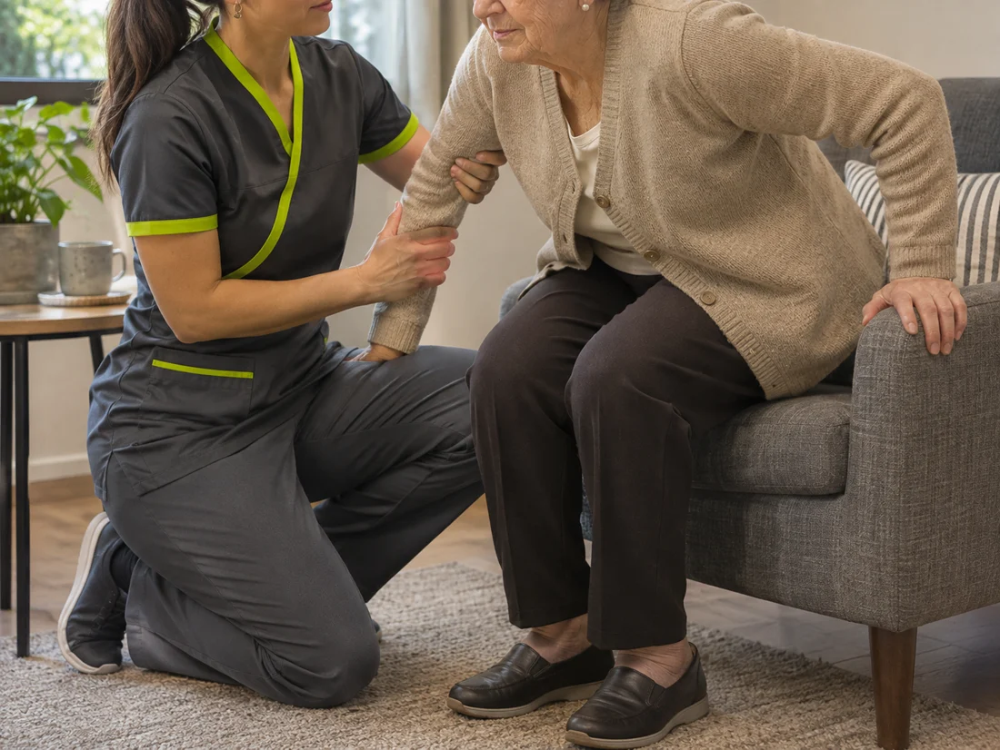
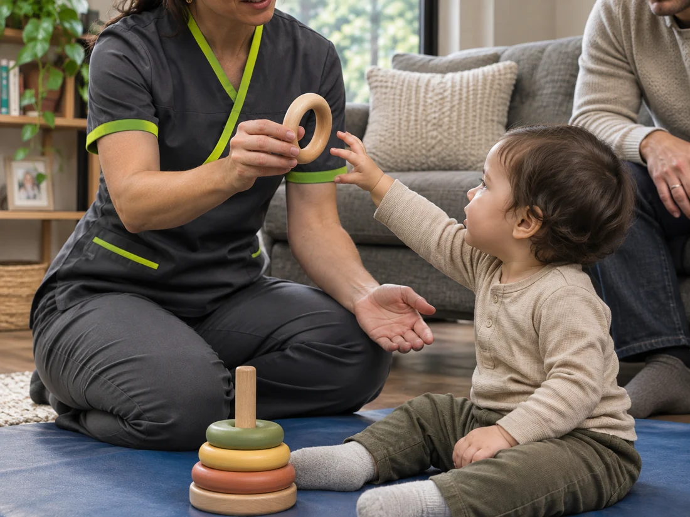

Nuestros servicios,
en tu hogar.
Conoce nuestras especialidades de kinesiología a domicilio para ti y tu familia.
Kinesiología
respiratoria.

Respirar con mayor facilidad.
Complementamos el tratamiento de enfermedades respiratorias con técnicas que favorecen la ventilación pulmonar, ayudan a despejar las vías aéreas y facilitan la eliminación de secreciones.
Atención para niños y adultos.
Abordamos condiciones como asma, neumonía y bronquitis obstructiva, además de EPOC, enfisema y fibrosis pulmonar en adultos; y síndrome bronquial obstructivo, atelectasias y fibrosis quística en niños.
Técnicas adaptadas a ti.
Tras la evaluación, seleccionamos maniobras manuales, ejercicios respiratorios y posicionamientos según sus necesidades. Cuando está indicado, trabajamos junto con oxigenoterapia, terapia inhalatoria o ejercicios de incentivo respiratorio.
Kinesiología
traumatológica.

Recupera movilidad y función.
Abordamos el dolor, la inflamación y las limitaciones de movimiento causadas por lesiones musculoesqueléticas, para ayudarte a retomar tus actividades cotidianas.
Lesiones musculoesqueléticas.
Tratamos condiciones como cervicalgia, lumbago, lumbociática, tendinitis, esguinces, fracturas, desgarros y disfunción patelofemoral, que afectan huesos, articulaciones, músculos o ligamentos.
Rehabilitación para tu día a día.
Adaptamos el tratamiento a tu condición y a las actividades que necesitas recuperar. Cuando corresponde, incorporamos orientación para la adaptación y el uso correcto de prótesis, órtesis y otros elementos de apoyo.
Rehabilitación
neurológica.

Movimiento e independencia.
Abordamos las dificultades de movimiento asociadas a condiciones del sistema nervioso, buscando mejorar la funcionalidad, la autonomía y la calidad de vida de cada persona.
Condiciones neurológicas.
Acompañamos a personas con parálisis cerebral, secuelas de un accidente cerebrovascular, distonías, Parkinson, lesiones medulares y traumatismos encefalocraneanos, entre otras condiciones.
Trabajo para la vida diaria.
Adaptamos la rehabilitación a las capacidades del paciente y a cómo su condición afecta las actividades cotidianas. Trabajamos la adquisición o reeducación de la marcha, el equilibrio y la postura según sus necesidades.
Kinesiología para
adulto mayor.

Autonomía en tu día a día.
Trabajamos para mantener la movilidad y las capacidades funcionales, acompañando a cada persona mayor en las actividades que le permiten conservar su independencia.
Cuidado para personas mayores.
Dirigido tanto a personas mayores que desean mantenerse activas como a quienes presentan dificultades de movimiento o molestias asociadas a condiciones como artritis y artrosis.
Ejercicio adaptado a ti.
Adaptamos la actividad física a sus capacidades y necesidades. Complementamos las sesiones con educación sobre hábitos posturales y movimiento cotidiano, para reducir el sedentarismo y favorecer una vida más activa en casa.
Estimulación
temprana.

Desarrollo a su propio ritmo.
Favorecemos las capacidades físicas, cognitivas, emocionales y sociales de cada niño mediante actividades adecuadas a su etapa, que promueven el aprendizaje, la iniciativa y la confianza.
Desde el nacimiento a los 6 años.
Atención para niños desde el nacimiento hasta los seis años, con orientación a padres y cuidadores para acompañar su desarrollo con mayor confianza y autonomía.
Estímulos para cada etapa.
Seleccionamos técnicas y actividades según el desarrollo individual del niño, respetando sus tiempos y capacidades. Proponemos desafíos que puede explorar sin presiones ni comparaciones, y orientamos a la familia para dar continuidad a este acompañamiento en casa.
Masoterapia
a domicilio.
Alivio y bienestar corporal.
Utilizamos técnicas manuales sobre los músculos para ayudar a aliviar la tensión, favorecer la relajación y mejorar el bienestar corporal.
Un masaje según tu necesidad.
Para quienes buscan abordar contracturas, aliviar la tensión muscular o dedicar un espacio a su bienestar. Ofrecemos masaje terapéutico descontracturante y de relajación, masaje reductivo, reafirmante y drenaje linfático manual.
En manos de kinesiólogas.
Todas las sesiones son realizadas por kinesiólogas, que seleccionan las técnicas y adaptan su aplicación al tipo de atención y a las necesidades de cada persona.